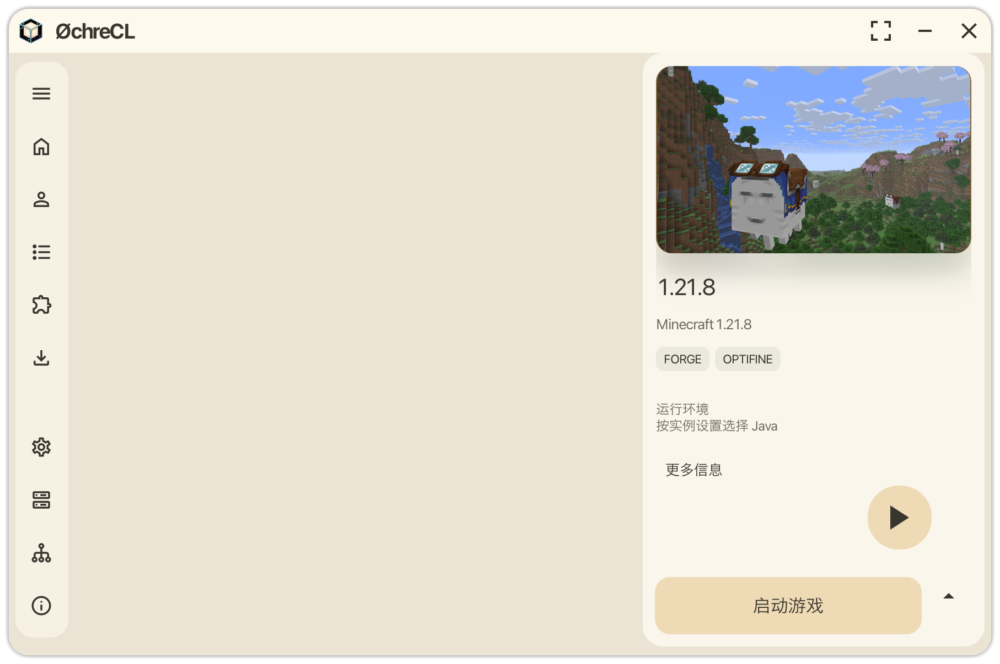

想玩，就出发。
管理游戏实例、模组与资源内容，保留 HMCL 的熟悉能力。把精力留给下一次冒险。
游戏实例
模组与资源
独立配置
开始你的第一局 ↗
YOUR GAME. YOUR SERVER. YOUR SPACE.
玩游戏，也创造相聚的地方。
把 Minecraft 游戏、本地服务器与日常管理，
放进一个属于你的窗口。
开源 · 基于 HMCL · macOS / Windows / Linux
01 / ONE WINDOW, MORE POSSIBILITIES
熟悉的 Minecraft，全新的打开方式。

从选择游戏到管理服务器，让常用操作触手可及。
实机测试界面截图，具体显示随版本和个人设置变化。
02 / MADE FOR PLAY & CREATE
一个启动器，两种乐趣。03 / MAKE IT YOURS
选择一张背景，试试「沉浸式透明（实验）」。
毛玻璃界面透出壁纸，主题色随图片而变，
文字根据整体明暗调整。
04 / SMALL DETAILS, BETTER FLOW
本次更新 / 0.2.0-beta.3让启动、安装和运行状态各归其位。
右键展开任务菜单，查看游戏、服务器和安装任务，点击返回对应操作。
选择「静默安装」收起进度弹窗，点击悬浮球即可重新查看。
启动中显示旋转进度指示，可切换「后台启动」，与下载安装明确区分。
05 / READY WHEN YOU ARE
选择你的系统。三个版本均内置 Java 与 JavaFX。
游戏运行所需的 Java 版本仍以具体实例要求为准。
适用于 Apple 芯片 Mac
DMG 安装包 · 约 69.5 MiB
1234
x64 便携测试版
ZIP 压缩包 · 约 76.9 MiB
1234
x64 桌面便携测试版
TAR.GZ 压缩包 · 约 77.9 MiB
1234
这是开发测试版本，更新前请备份重要配置与存档。Windows 和 Linux 已完成打包完整性检查，尚未在原生系统完成实测。查看安装指南 ↗ · SHA-256 校验和 ↓
OPEN SOURCE, WITH THANKS.
ØchreCL 基于 Hello Minecraft! Launcher（HMCL）开发，重新设计了界面，并加入本地服务器与任务管理。感谢 HMCL 开发者及相关开源项目的贡献。